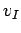
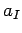
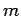
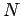
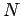
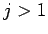
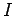
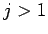
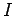

For convenience, in in the following sections we abbreviate  and
denote multiplication in
and
denote multiplication in
 by juxtaposition instead of .
Furthermore, to sets
we associate integers
by juxtaposition instead of .
Furthermore, to sets
we associate integers
SKETCH OF PROOF: In order to prove this, one has to use a more general statement
in which the set
 is substituted by
for some
. After this, the results can be proved
straightforwardly using induction on
is substituted by
for some
. After this, the results can be proved
straightforwardly using induction on  and the relations
(14) and (15) of the exterior algebra.
For the details we refer to
appendix 18.3.
and the relations
(14) and (15) of the exterior algebra.
For the details we refer to
appendix 18.3.

To a set
 we associate the followng subsets of
we associate the followng subsets of
 :
:
PROOF: We apply Lemma 13.1 to
and
. Since
there is an invertible element
such that
by (13). We claim
that
vanishes for each
that
is not contained in
.
If
then
.
If
and
then
.
Finally if
and
then
.
Thus the expression is nonzero only if
.
A set
is obviously contained in , so
by the second part of the Lemma we have
. Thus, setting the assertion
follows.

PROOF: Clearly the sum is  if since
. For
we show by induction on
that the sum is zero.
Starting with the case we have
and
if since
. For
we show by induction on
that the sum is zero.
Starting with the case we have
and
 . For the induction step,
let
be minimal and set
.
If
we calculate
. For the induction step,
let
be minimal and set
.
If
we calculate
PROOF: Let
and
observe that
,
,
and that
.
Because , we must have . On the other hand
implies
for a set
 as in the sum. Therefore we may apply Lemma
13.2:
as in the sum. Therefore we may apply Lemma
13.2:
But by Lemma 13.3, the last term equals
. Using relation (13)
of the exterior algebra, this can be transformed into
 up to some invertible mutiple .

We are now able to prove Proposition 12.1 by induction
on the Lie rank . In the case where both sets of
are reverse symplectic. In
there is just one set
namely , for which we have
. Thus there is nothing to prove here.
For the induction step we embed
into
 sending to
. It is easy to check that this indeed leads to an embedding of
algebras. Using the induction hypothesis we may treat the
case where
without much effort.
Some caution is needed only concerning the difference
between the two ideals  of
and
sending to
. It is easy to check that this indeed leads to an embedding of
algebras. Using the induction hypothesis we may treat the
case where
without much effort.
Some caution is needed only concerning the difference
between the two ideals  of
and
 . Denote them by and
. Denote them by and  . A single element
can be
written
. A single element
can be
written
where the basis elements all are smaller than , that is
for the corresponding multi-indices.
If
we may apply the induction hypothesis
to the
set
 in case
is non reverse symplectic too:
in case
is non reverse symplectic too:
Again, the second sum compensate for
the difference between the
two ideals and  .
Multiplying this congruence by from the left (respectively by
.
Multiplying this congruence by from the left (respectively by  from the right,
respectively by both from both sides) yields the assertion because
the elements vanish, and
implies
from the right,
respectively by both from both sides) yields the assertion because
the elements vanish, and
implies
 ,
where
,
where  is the multi-index attached to the set
.
is the multi-index attached to the set
.
It remains to prove the assertion in the
case where
is reverse symplectic.
Here we need the preparations of this section.
By the reverse symplectic condition applied to tableaux of shape  we have
for all , where
.
Because  itself is non reverse symplectic we must have
. According to Lemma 13.4
we conclude
. But this implies the assertion of Proposition
12.1 in the remaining case too.
we have
for all , where
.
Because  itself is non reverse symplectic we must have
. According to Lemma 13.4
we conclude
. But this implies the assertion of Proposition
12.1 in the remaining case too.